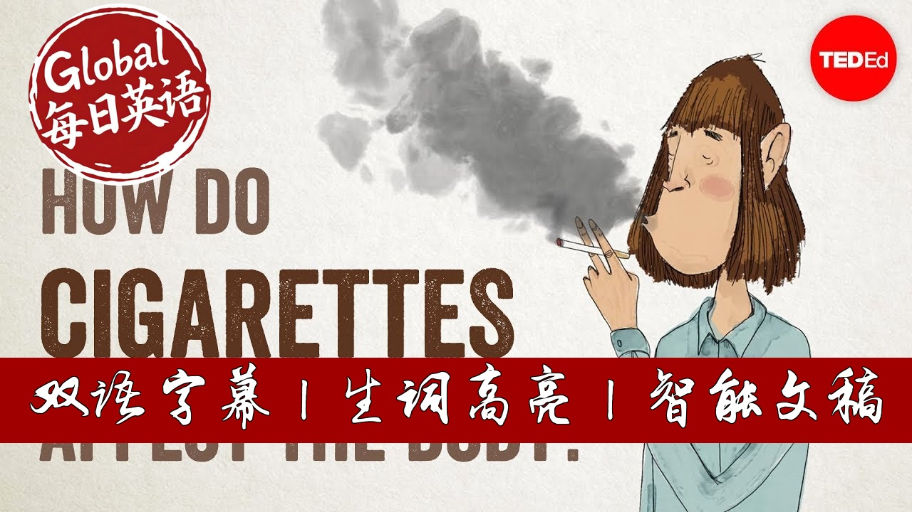

【【生词双高亮】TED科普：烟如何侵蚀你的身体？】
Summary: Smoking introduces over 5,000 chemicals that damage teeth, impair smell, and harm lungs by destroying cilia. Carbon monoxide reduces oxygen in blood, while nicotine triggers addictive dopamine release. Long-term effects include cancer risks, vascular damage, and reproductive issues. Quitting brings immediate benefits: heart rate normalizes in 20 minutes, lung function improves within months, and cancer risks drop significantly over years. Support tools like nicotine therapy and counseling aid cessation.
摘要： 吸烟时5000多种化学物质会侵蚀牙齿、损伤嗅觉并破坏肺部纤毛。一氧化碳降低血氧含量，尼古丁刺激多巴胺释放导致成瘾。长期吸烟可能引发癌症、血管病变和生育问题。戒烟后20分钟心率即恢复正常，数月后肺部功能改善，数年內癌症风险显著下降。尼古丁替代疗法和心理辅导等工具可有效辅助戒烟。

⏱️ Estimated Reading Time: 7 min.
📚 四级生词 📚 六级生词 📚 雅思生词 📚 托福生词 📚 专八生词 📚 SAT生词 📚 考研生词 📚 GRE生词
Cigarettes aren’t good for us.
That’s hardly news--we’ve known about the dangers of smoking for decades.
But how exactly do cigarettes harm us?
Let’s look at what happens as their ingredients make their way through our bodies, and how we benefit physically when we finally give up smoking.
With each inhalation, smoke brings its more than 5,000 chemical substances into contact with the body’s tissues.
From the start, tar, a black, resinous material, begins to coat the teeth and gums, damaging tooth enamel, and eventually causing decay.
Over time, smoke also damages nerve-endings in the nose, causing loss of smell.
Inside the airways and lungs, smoke increases the likelihood of infections, as well as chronic diseases like bronchitis and emphysema.
It does this by damaging the cilia, tiny hairlike structures whose job it is to keep the airways clean.
It then fills the alveoli, tiny air sacs that enable the exchange of oxygen and carbon dioxide between the lungs and blood.
A toxic gas called carbon monoxide crosses that membrane into the blood, binding to hemoglobin and displacing the oxygen it would usually have transported around the body.
That’s one of the reasons smoking can lead to oxygen deprivation and shortness of breath.
Within about 10 seconds, the bloodstream carries a stimulant called nicotine to the brain, triggering the release of dopamine and other neurotransmitters including endorphins that create the pleasurable sensations which make smoking highly addictive.
Nicotine and other chemicals from the cigarette simultaneously cause constriction of blood vessels and damage their delicate endothelial lining, restricting blood flow.
These vascular effects lead to thickening of blood vessel walls and enhance blood platelet stickiness, increasing the likelihood that clots will form and trigger heart attacks and strokes.
Many of the chemicals inside cigarettes can trigger dangerous mutations in the body’s DNA that make cancers form.
Additionally, ingredients like arsenic and nickel may disrupt the process of DNA repair, thus compromising the body’s ability to fight many cancers.
In fact, about one of every three cancer deaths in the United States is caused by smoking.
And it’s not just lung cancer.
Smoking can cause cancer in multiple tissues and organs, as well as damaged eyesight and weakened bones.
It makes it harder for women to get pregnant.
And in men, it can cause erectile dysfunction.
But for those who quit smoking, there’s a huge positive upside with almost immediate and long-lasting physical benefits.
Just 20 minutes after a smoker’s final cigarette, their heart rate and blood pressure begin to return to normal.
After 12 hours, carbon monoxide levels stabilize, increasing the blood’s oxygen-carrying capacity.
A day after ceasing, heart attack risk begins to decrease as blood pressure and heart rates normalize.
After two days, the nerve endings responsible for smell and taste start to recover.
Lungs become healthier after about one month, with less coughing and shortness of breath.
The delicate hair-like cilia in the airways and lungs start recovering within weeks, and are restored after 9 months, improving resistance to infection.
By the one-year anniversary of quitting, heart disease risk plummets to half as blood vessel function improves.
Five years in, the chance of a clot forming dramatically declines, and the risk of stroke continues to reduce.
After ten years, the chances of developing fatal lung cancer go down by 50%, probably because the body’s ability to repair DNA is once again restored.
Fifteen years in, the likelihood of developing coronary heart disease is essentially the same as that of a non-smoker.
There’s no point pretending this is all easy to achieve.
Quitting can lead to anxiety and depression, resulting from nicotine withdrawal.
But fortunately, such effects are usually temporary.
And quitting is getting easier, thanks to a growing arsenal of tools.
Nicotine replacement therapy through gum, skin patches, lozenges, and sprays may help wean smokers off cigarettes.
They work by stimulating nicotine receptors in the brain and thus preventing withdrawal symptoms, without the addition of other harmful chemicals.
Counselling and support groups, cognitive behavioral therapy, and moderate intensity exercise also help smokers stay cigarette-free.
That’s good news, since quitting puts you and your body on the path back to health.